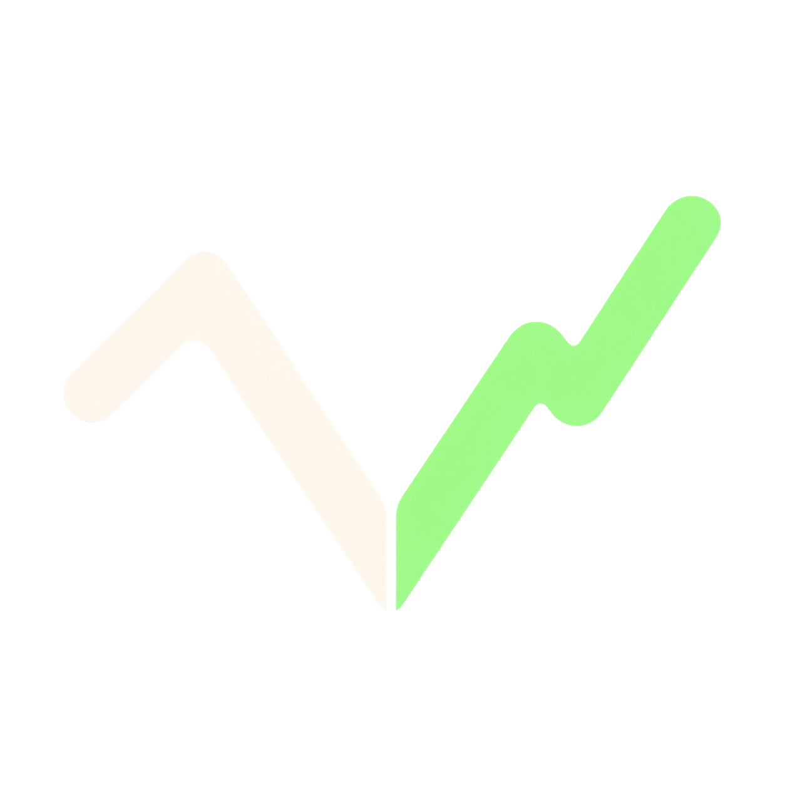

vestraStocklana · Submission draft
Vestra
Vestra brings PreStocks company news and token data together, lets Bull, Bear, and Neutral examine the same evidence, then gives you a Council summary you can read or hear.
Project description
Researchers in PreStocks have to piece together a private company’s news, its PreStocks quote, and its on-chain market from separate pages. That makes it hard to compare opposing readings of the same headline or see what the token did around it.
Vestra brings that work into one desk for companies in the PreStocks catalogue. Its Catalyst Monitor links company headlines to the selected token’s latest completed pool close, liquidity, and 24-hour volume, alongside the PreStocks quote and reference mark. A market-read check flags large price gaps, low activity, and stale closes without calling a clean snapshot fair value. Headlines that do not name the company or come from its publisher are kept out of the AI evidence packet.
Three Gemini analysts read the same server-fetched source packet in parallel: a bull makes the upside case, a bear tests the risks, and a neutral analyst separates direct statements from unknowns. A Council chair reviews their arguments against the headlines, summarizes the evidence and uncertainties, and can generate an optional two-voice audio brief. Supported claims link to the publisher. A live node graph shows each stage as it finishes.
Market replay follows the selected PreStocks mint to a Solana USDC pool. Users can inspect daily prices in LuxAlgo Vela, compare closes around a dated headline, and explore a sample 5/20-day moving-average strategy with adjustable costs beside buy-and-hold.
Solana is where these PreStocks tokens and pools trade, so Vestra follows the exact on-chain mint instead of substituting unrelated equity or FX data. Pool prices are separate from PreStocks quotes and are not a PreStocks return series. Vestra shows pool volume and warns when trading is thin or prices diverge. Saved-company checks show quote movement since the prior browser-local check and refresh every ten minutes while open. Crypto headlines stay separate from company evidence. The app is read-only and never trades; it has no Telegram or background notifications.
Tracks
Vestra selects only assets returned by the PreStocks catalogue; it does not integrate other pre-IPO tokens. Stocklana lists a $100,000 Main Track prize pool and a $10,000 PreStocks bounty with three awards: $5,000, $3,000, and $2,000. The PreStocks bounty is the closest fit because Vestra uses that catalogue and follows the selected mint throughout.
Links and team
Demo script · 2:50
Before submitting
- Provide at least one accessible GitHub, live demo, or video link; Stocklana requires one.
- Confirm team members and any required project fields in the submission form.
- Review the demo against the published deadline: Friday, September 25, 2026 at 4:00pm ET.
- Choose the submitting account and connect its wallet; the form is gated on the official site.
- Run one fresh Gemini debate and check its evidence links before recording. One four-role run completed; the Bear role used its disclosed fallback after a temporary provider failure.
- Do not claim that the pool simulation represents PreStocks returns or that the product places trades.
Submission status: draft prepared. The repository and documentation have been pushed to GitHub. Confirm it is accessible to judges or provide a public demo/video URL. The submitter must choose the account/wallet and confirm team details in the form. Check the official Stocklana page for the live deadline and status.
Official details: Stocklana hackathon page.